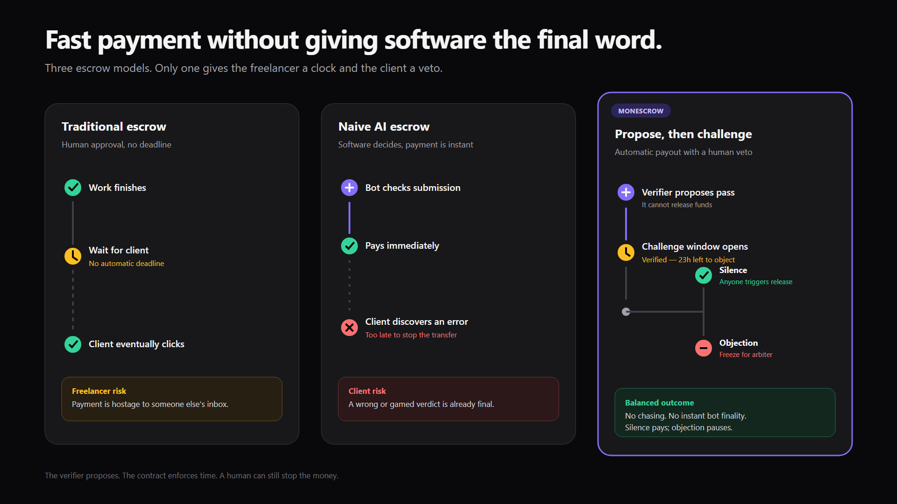

Freelance escrow where the client funds the whole job up front and each milestone releases as it is shown to be done. A passing check does not move money — it opens a challenge window.
Escrow breaks that deadlock and replaces it with a harder question: who decides the work is done? Hand it to a human and the freelancer waits on someone’s inbox. Hand it to a bot and you have let software move somebody’s money on its own judgement.
The answer here is to make the bot’s verdict a proposal with a deadline.
The freelancer submitted a deliverable. Nothing has moved yet.
A simulation, not the chain — the real window defaults to 3 days and 90 seconds in the demo.
Point an HTTP check at a completely blank page and it passes. Status 200, nothing required in the body, green tick, valid signature from the real verifier key.
That is not a bug shown as a feature. It is the honest state of every automated check
anyone ships — HTTP 200 and Lighthouse > 80 are both
satisfied by an empty file. Any system treating a check like that as a verdict
is one blank page away from paying out for nothing.
So the contract does not treat it as a verdict. The pass opens the window, the client objects inside it, and the money stays put. The check was wrong and the client still kept their funds. The design survives a weak check because it never depended on the check being strong.

Honest status. This page is a placeholder while the interface is finished — everything below is checkable in the repository.
| Piece | State |
|---|---|
| Escrow + factory contracts | written, compiling, formatted |
| Contract test suite | 130 tests across 10 suites, 8/8 mutations caught |
| Cancun support on Monad | probed on the live chain, not assumed |
| Clean-clone build | proven from a tree with no dependencies |
| Safe deployment relay | full proposal dry run completed |
| Brand, empty states, deck | delivered against a frozen manifest |
| Web interface | in progress |
| Deployed + verified on explorers | test gate green; waiting on the deployment Safe |
Testnet only, and not audited. Nothing here should hold funds you would miss.